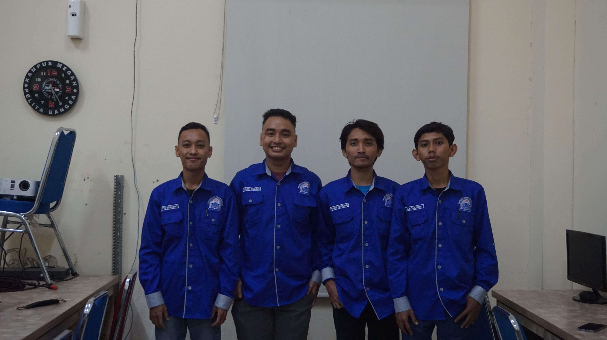

Biodata Perkenalan Diri
Perkenalkan nama saya Aditya Bani Isro. Lahir di Jakarta. Saya mahasiswa Universitas Pelita Bangsa jurusan prodi Teknik Informatika. Selama kuliah 2 tahun berkuliah dijurusan Teknik Informatika, saya banyak sekali mendapat ilmu yang belum saya dapatkan di jenjang SMK. Saya merupakan individu yang memiliki ketertarikan terhadap dunia jaringan komputer, fotografi dan juga Pemrograman Web. Terampil dalam mengoperasikan komputer sekaligus Microsoft Office, HTML/CSS, PHP, Python dan mengerjakan projek baru pembuatan Aplikasi Berbasis Web. Dengan demikian saya sangat senang mempelajari hal-hal baru.
